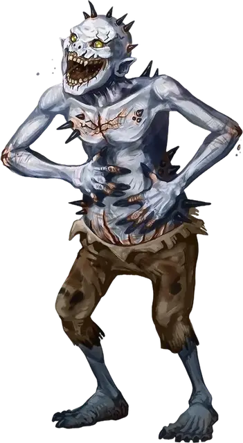

Чудище звёздных порождений
Star Spawn Grue
Маленькая Аберрация, хаотично-злая

Класс Доспеха 11
Хиты 17 (5к6)
Скорость 30 футов
| мод | спас | ||
|---|---|---|---|
| СИЛ | 6 | −2 | −2 |
| ЛОВ | 13 | +1 | +1 |
| ТЕЛ | 10 | +0 | +0 |
| мод | спас | ||
|---|---|---|---|
| ИНТ | 9 | −1 | −1 |
| МДР | 11 | +0 | +0 |
| ХАР | 6 | −2 | −2 |
Иммунитет к урону психическая энергия
Чувства тёмное зрение 60 футов, пассивное Восприятие 10
Языки Глубинная речь
Опасность 1/4 (50 опыта)
Бонус мастерства +2
Среда обитания Болото, Горы
Особенности
Аура безумия. Существа в пределах 20 фт. от чудища, которые не являются аберрациями, совершают с помехой спасброски и броски атаки против существ, отличных от чудища звёздных порождений.
Действия
Сбивающий с толку укус. Рукопашная атака оружием: +3 к попаданию, досягаемость 5 фт., одна цель. Попадание: 6 (2к4 + 1) колющего урона, и цель должна преуспеть в спасброске Мудрости Сл 10, иначе против него будут совершаться с преимуществом броски атаки до начала следующего хода чудища.
Описание
Материальный план представляет только небольшой кусочек мультивселенной. За пределами хорошо изученных планов существования лежат измерения, что смертельно опасны для смертных. Некоторые настолько враждебны, что даже мгновенного контакта с таким местом достаточно, чтобы свести смертного с ума. Но есть существа, для которых подобные измерения являются родными: существа, что вечно голодают, ищут, завывают, а иногда ещё и видят сновидения. Эти Древние старше всех прочих смертных рас и всегда внушают ужас разумным гуманоидам.
Однако каким сильным не было желание вторгнуться и захватить Материальный План, Древние не могут или не хотят покидать свои измерения. Одни заточены в своих измерениях внешними силами, некоторые неразрывно связаны со своими домашними реальностями, а другие просто не могут найти даже подобие выхода из собственного измерения.
Предвестники рока. Существа известные как порождения звёзд – это предвестники, рядовые солдаты, или лейтенанты Древних, способные принимать форму гуманоида, что может путешествовать по Материальному Плану. Чаще всего они пребывает следом за кометой...или, возможно, этот феномен предупреждает о том, что поблизости есть порождение звёзд, и оно доступно для общения. Если знамения верны, то колдуны и культисты спешат собраться вместе, читают вслух пренебрежительные слова и проводят безумные ритуалы, что направляют на верный путь пылающее порождение звёзд в этот мир.
Чудище звёздных порождений. Клыкастое, безгубое, вечно ухмыляющееся и безумно пялящееся чудище скачет вокруг на тонких ногах и длинных руках. Щетина и шипы растут из странных пятен на его бледной коже, а длинные пальцы заканчиваются грязными обломанными ногтями.
Чудища являются слабейшими из звёздных тварей.
Множество корчащихся, карабкающихся чудищ обычно сопровождает более сильное порождение.
Их постоянные визг и крик испускают психическую энергию, которая разрушает мыслительный процесс других существ. Разумные существа испытывают эпилепсию, галлюцинацию, дезориентацию, и волны безысходности, когда оказываются рядом с кучкой чудищ порождений звёзд.